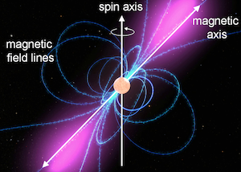

Pulsars
Most of the neutron stars can be observed as pulsars. Pulsars are rotating neutron stars, which have pulses of radiation at regular intervals. The strong magnetic fields along the poles of the pulsar funnel jets of particles, which produce powerful beams of light.
(Source: https://www.mpifr-bonn.mpg.de/research/fundamental/neutronstars)